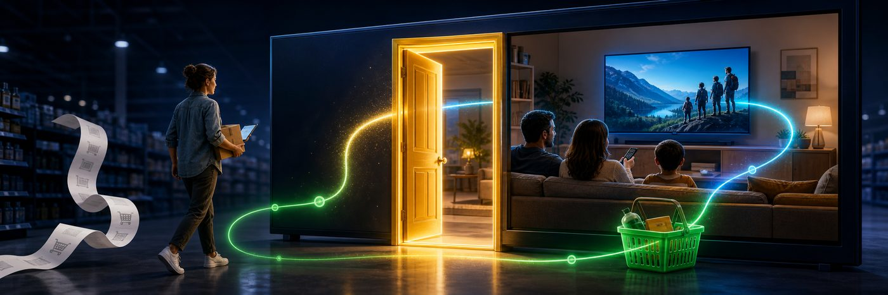

Reference · Ad Tech
The Ad Tech Glossary
Every acronym, term of art, and named system across the Ad Tech desk — 383 in all, defined in plain language, each linked to the corpora that use it. Filter by category, article, or search below, or jump by letter.



#
- 464XLAT
- A translation technique that lets a device on an IPv6-only mobile or fixed-wireless network still reach older IPv4-only websites and apps, at the cost of routing that traffic through a shared carrier gateway rather than giving the device its own address.Appears in The Address Knows You
- 8-K 10-K, 10-Q
- Official financial reports a public company must file with U.S. regulators — an 8-K discloses a major event quickly, while 10-Qs and 10-Ks are the regular quarterly and annual reports, and any of them could eventually confirm deal terms a company has not otherwise disclosed.Appears in The Missing Front Door
A
- A2A Agent-to-Agent, Agent2Agent
- An open standard, introduced by Google in 2025, that lets AI agents built by different companies discover each other, authenticate, and hand off tasks to one another, complementing MCP's agent-to-tool connections with agent-to-agent ones.Appears in The Protocol War
- AAMP Agentic Advertising Management Protocols
- The IAB Tech Lab's umbrella framework for agentic advertising standards, built on the industry's existing transaction standards, offering buyer- and seller-agent reference implementations as a more institutionally neutral alternative to AdCP.Appears in Closer to the Metal, The Protocol War, The Seller's Agent
- ACAM Alianza para la Calidad de la Medición Multimedia en México
- The Mexican advertising industry's buy-side committee that certifies which company's audience-measurement service counts as the official currency for buying and selling TV and video ads.Appears in Reach Ahead of Revenue
- ACP Agentic Commerce Protocol
- A standard built by OpenAI and Stripe that lets an AI agent complete a purchase on a merchant's behalf inside a chat interface, powering features like ChatGPT's Instant Checkout.Appears in The Protocol War
- ACR ACR data, ACR panel, Automated content recognition, Automatic Content Recognition, automatic content recognition
- A feature built into most smart TVs that samples the picture or sound on screen and matches it against a reference library to identify exactly what is playing, whether it arrived through a streaming app, a cable box, or a game console, so the platform knows what a household watched even though it doesn't know who in the room was watching.Appears in A Billion Screens, Buying the Living Room, Closer to the Metal, On Leased Land, Reach Ahead of Revenue, Safe Beside What?, The Address Knows You, The Living-Room Handoff, The Measured Screen, The Missing Front Door, The Protocol War, The Seller's Agent, The Signal Layer, Who Keeps the Spread
- ACR opt-in
- The consent a smart TV owner gives, usually during setup, allowing the manufacturer to turn on content-recognition tracking on that television; without it the TV does not report viewing data at all.Appears in The Signal Layer
- Ad Exchange exchange
- A digital marketplace that runs a real-time auction matching advertisers who want to buy an ad slot with publishers who have one to sell, typically taking a cut of each transaction.Appears in Buying the Living Room, The Protocol War
- ad pod commercial pod
- A sequence of several consecutive ad slots shown together as one commercial break, which needs to be filled coherently (no repeat advertisers, sensible pacing) rather than slot by slot.Appears in The Seller's Agent
- ad server
- The system that decides which specific ad and creative actually plays in a given slot, whether that slot was sold directly or through an auction.Appears in The Seller's Agent
- ad tier ad tiers, ad-supported tier
- A cheaper subscription option, offered by streaming services like Netflix and Disney+, where the viewer accepts commercial breaks in exchange for a lower monthly price.Appears in The Address Knows You
- ad-server-level verification
- Checking whether an ad is safe and real at the system that assembles and delivers the video stream, rather than by running a script inside a web page, which is the fallback CTV needs because there is no page to inspect.Appears in Safe Beside What?
- Ad-tech tax ad tech tax
- Industry shorthand for the cumulative fees and margins that intermediaries in the digital-advertising supply chain skim off before an ad dollar reaches the publisher, estimated at roughly a quarter of programmatic spend.Appears in The Protocol War
- ad-tier ad-supported tier, ads plan
- A cheaper subscription option on a streaming service that shows commercials in exchange for a lower monthly price, as opposed to a full-price ad-free plan.Appears in Reach Ahead of Revenue
- AdCOM Ad Common Object Model, Advertising Common Object Model
- A shared technical dictionary of standard terms (like 'device,' 'user,' or 'placement') that lets different advertising systems describe an ad opportunity the same way instead of each using its own incompatible format.Appears in Closer to the Metal, The Protocol War
- AdCP Ad Context Protocol
- An open standard, launched in October 2025 by a coalition of ad-tech and publishing companies, that lets AI agents representing advertisers and publishers negotiate and complete media buys in plain language, often outside the traditional split-second ad auction.Appears in Closer to the Metal, On Leased Land, The Measured Screen, The Protocol War
- AdCP (Advertising Context Protocol) Ad Context Protocol
- An advertising-specific protocol built on top of MCP that gives buyer and seller AI agents a shared vocabulary for discovering inventory, building media plans, and transacting deals.Appears in The Seller's Agent
- addressable linear addressable TV
- Traditional broadcast or cable television that has been made targetable household-by-household, rather than showing the same ad to every viewer of a channel.Appears in On Leased Land
- addressable TV
- Television advertising where different households watching the same program can be shown different commercials, based on data the distributor holds about each household.Appears in The Seller's Agent
- AdEx ad expenditure, advertising expenditure
- Shorthand used by Indian media-measurement firms for total advertising expenditure, the industry's term for the overall size of the ad market in a given year.Appears in A Billion Screens
- adpocalypse the adpocalypse
- The 2017 episode in which hundreds of advertisers pulled their money from YouTube after discovering their ads were running next to videos from extremist and terrorist groups, which proved that even real, fraud-free ad views could still damage a brand through bad company.Appears in Safe Beside What?
- Ads Manager
- Roku's self-serve advertising tool that lets smaller businesses build and buy their own ad campaigns directly on Roku's platform without going through a big ad agency or buying desk.Appears in Buying the Living Room
- ads.cert Authenticated Connections, Authenticated Delivery, ads.cert 2.0
- A proposed industry standard that would let ad systems cryptographically verify that a request genuinely comes from the server it claims to, instead of just trusting a self-reported address — aimed at stopping the kind of forged traffic that plagues streaming-TV ads, but adopted only slowly in practice.Appears in The Address Knows You
- ads.txt Authorized Digital Sellers
- A public list a website publishes stating exactly which companies are allowed to sell its ad space, so buyers can spot and refuse ads offered by impostors pretending to represent that site.Appears in Safe Beside What?
- advertising ID IFA, RIDA, device advertising ID
- A unique code assigned to a streaming device or phone that lets advertisers recognize the same device across different apps and ad requests without knowing a person's real identity.Appears in Safe Beside What?
- AFAI Amazon Advertising ID, Amazon Fire TV Advertising Identifier, Fire TV Advertising Identifier
- Amazon's resettable ID code for Fire TV devices and tablets that advertisers can use to recognize the same device across different apps, similar to Roku's or Samsung's device IDs but kept largely inside Amazon's own advertising system rather than shared openly with outside buyers.Appears in The Signal Layer
- affirmative express consent
- A legal standard the FTC has applied in recent settlements requiring that a company get a clear, specific, standalone yes from a consumer before collecting or using their data — a privacy-policy checkbox or a buried terms-of-service clause does not count.Appears in The Signal Layer
- agent (AI agent) agentic AI, agentic advertising
- Software given a goal rather than a fixed set of instructions, which then decides for itself what steps to take — querying data, evaluating options, and executing actions — instead of a human or a hard-coded script doing it step by step.Appears in The Seller's Agent
- Agent Registry
- A directory maintained by a standards body that lists AI agents recognized as legitimate and trustworthy, so publishers and advertisers can tell a verified agent apart from an unrecognized or potentially malicious one.Appears in The Protocol War
- Agent service agent services
- In the container-hosting framework, any specialized piece of software packaged to run inside an exchange's computers — for example a program that resolves who a user is, checks for fraud, adds contextual signals, or bids on an ad.Appears in Closer to the Metal
- agentic advertising agent-to-agent advertising, agentic AI, agentic buying, agentic media
- The use of autonomous AI software agents that can plan and carry out multi-step media-buying tasks - setting up, running, and adjusting an ad campaign - with little step-by-step human input, and in the most advanced form, agents on the buyer's and seller's sides negotiating and transacting directly with each other.Appears in On Leased Land, Safe Beside What?
- Agentic AI / AI Agent AI agents, agentic buying, agentic media buying, an agent
- Software that can carry out a multi-step task on its own once given a goal in plain language — for example, an advertiser telling an AI system to "get me the best results for this campaign" and having it choose, buy, and adjust ad placements automatically instead of a person doing it by hand.Appears in Buying the Living Room
- AGPL-3.0
- A type of open-source software license; code released under it can be freely used and modified, but any service built on it must also share its own source code.Appears in Closer to the Metal
- ANA Association of National Advertisers
- The main U.S. trade group representing brands and advertisers — the companies that pay for ads, as opposed to the companies that sell ad space.Appears in The Missing Front Door
- AP2 Agent Payments Protocol
- A payment-authorization standard from Google that lets an AI agent prove, through a chain of cryptographically signed digital records, exactly what a human authorized it to buy and for how much, so merchants and card networks can trust a purchase an agent made on someone's behalf.Appears in The Protocol War
- app bundle ID app.bundle, bundle ID
- The unique code an app store assigns to a streaming app, which is the closest thing a CTV ad has to a web address — it tells a buyer which app an ad ran in, but nothing about which show or scene it ran next to.Appears in Safe Beside What?
- app-ads.txt ads.txt
- The version of ads.txt built for apps and connected-TV platforms, since those don't have a website address of their own: it lets a publisher's app-store listing point to an authorized-sellers file so buyers can verify who is really allowed to sell that app's ad space.Appears in Reach Ahead of Revenue, Safe Beside What?
- arbitrage content arbitrage
- The practice of cheaply acquiring or producing content mainly to generate ad inventory to resell at a markup, rather than to genuinely inform or entertain viewers.Appears in Safe Beside What?
- arbitrage (in supply chains) reseller path
- Buying inventory from a publisher and reselling it onward at a markup, so the same ad slot reaches the buyer through an extra middleman who takes a cut.Appears in The Seller's Agent
- ARPU average revenue per user
- The average amount of money a company (typically a telecom or subscription service) collects from each customer over a given period, a standard way to measure how much a customer is worth.Appears in A Billion Screens
- ARR annual recurring revenue, annualized run-rate, run rate, run-rate
- A way of estimating a company's yearly revenue by taking a recent short period (like a month or quarter) and multiplying it out to a full year, which can overstate actual trailing revenue if that recent period was unusually strong.Appears in The Missing Front Door
- ARTF Agentic RTB Framework, Agentic Real-Time Framework
- A framework from the IAB Tech Lab that speeds up the traditional split-second ad auction by letting outside companies' bidding software run as small, sealed programs physically inside the auction host's own data center, cutting out the network delay of calling out to a separate company's servers.Appears in Closer to the Metal, The Protocol War
- ASCI Advertising Standards Council of India
- India's self-regulatory advertising body, which sets a code of conduct for ads and influencer marketing and reviews complaints, with some of its standards made legally binding on TV advertising.Appears in A Billion Screens
- ATT App Tracking Transparency
- Apple's 2021 rule that makes iPhone apps ask permission before tracking you across other apps, which most users declined.Appears in The Living-Room Handoff
- Attention measurement attention data, attention metrics
- Any method that tries to estimate whether a real person was actually looking at and mentally engaged with an ad, rather than just having it technically rendered on a screen near them.Appears in The Seller's Agent
- AU (Attention Unit) Adelaide AU
- Adelaide's 0-to-100 score that predicts, from a statistical model rather than direct observation, how likely a given ad placement is to capture attention and drive a business result.Appears in The Seller's Agent
- audience extension audience-extension
- A platform taking its own audience data and using it to target the same people on someone else's media.Appears in The Living-Room Handoff
- authentication ceiling FAST authentication ceiling
- The practical limit on how much of connected-TV viewing can ever be tied to a real identity, because a large and fast-growing share of streaming happens on free, ad-supported channels where nobody logs in with an email address.Appears in The Signal Layer
- authorization gap
- A term describing the situation where a brand's products can be found and bought by an AI shopping agent on one retail platform (because that platform allows outside agents in) but not on another platform (because it blocks them), regardless of what the shopper wants.Appears in The Protocol War
- AVOD Ad-supported VOD, ad-supported streaming, ad-supported video on demand, ad-supported-video-on-demand, advertising-based video on demand
- A streaming model where viewers watch shows and movies for free (no subscription) in exchange for sitting through advertisements, similar to how broadcast television has always worked.Appears in A Billion Screens, Buying the Living Room, On Leased Land, Reach Ahead of Revenue, The Address Knows You, The Missing Front Door, The Signal Layer
B
- Backstage Yahoo Backstage
- Yahoo's platform for packaging and selling its own ad inventory to buyers, including curated audience deals.Appears in Who Keeps the Spread
- BARC BARC India, Broadcast Audience Research Council
- The industry body that has been India's sole official measurer of television viewership since 2014, using a panel of people-meter devices in sample households to produce the ratings that TV ad prices are based on.Appears in A Billion Screens
- Bid duplication bid-duplication
- A long-standing problem in online ad auctions where the same ad opportunity gets offered to a buyer through several different paths at once, so the buyer risks bidding against itself and driving its own price up.Appears in Closer to the Metal
- Bid request OpenRTB bid request, bid requests
- The message an ad exchange sends out, many times per second, describing an available ad slot (what device, what app, what viewer signals are known) so that advertisers' systems can decide in real time whether and how much to bid for it.Appears in Closer to the Metal, The Address Knows You, The Signal Layer
- bid request / bid response bid request, bid response
- The two-part message exchange at the heart of a real-time ad auction: a publisher's system describes an available ad slot and audience (the bid request), and an advertiser's system replies with an offer and an ad to show (the bid response), all within about a tenth of a second.Appears in The Protocol War
- Bid shading BID_SHADE
- A technique for lowering a bid slightly below what a buyer would actually be willing to pay, based on a prediction of the lowest price likely to still win, so the buyer doesn't overpay in auctions where it would have won anyway.Appears in Closer to the Metal
- bid stream bidstream
- The continuous, high-volume flow of these bid requests and responses moving between publishers, ad exchanges, and advertisers' bidding systems.Appears in The Address Knows You
- Bidstream bid stream
- The continuous flow of bid requests and responses moving between sellers and buyers across the advertising industry at any given moment — essentially the live river of ad-auction data.Appears in Closer to the Metal
- bidstream bloat bidstream
- The buildup of excessive, duplicate, or low-value bid requests flooding advertisers' buying systems, which wastes computing time and money without improving which ads actually get bought.Appears in The Protocol War
- Brand Safety Floor the Floor
- The GARM-defined baseline of content considered unsuitable for any advertising at all — such as terrorism, child exploitation, or extreme violence — below which no brand, however risk-tolerant, is expected to advertise.Appears in Safe Beside What?
- Brandcast Brandcast 2025
- YouTube's annual flagship advertiser event in India, where the company unveils new ad formats and publishes its own scale and usage statistics to pitch marketers on the platform.Appears in A Billion Screens
- Break Fee break fees, reciprocal termination fee, termination fee
- A pre-agreed cash penalty that one company must pay the other if a merger falls apart under certain conditions, meant to discourage either side from walking away or from being outbid by a rival.Appears in Buying the Living Room
- Bridge Loan 364-day bridge, bridge financing, bridge term loan
- A large short-term loan a company lines up to guarantee it has cash on hand to complete a deal, which it typically pays off soon after by issuing longer-term bonds on more permanent terms.Appears in Buying the Living Room
- Business-Judgment Deference business judgment, business-judgment rule
- The normal legal standard under which courts assume a company's board acted in good faith and don't second-guess its decisions, unless there's a specific reason to suspect a conflict of interest.Appears in Buying the Living Room
- BVOD broadcaster on-demand, broadcaster video on demand
- Streaming video services run directly by traditional broadcasters, letting people watch a channel's programming on demand rather than only live.Appears in A Billion Screens, Reach Ahead of Revenue
C
- carrier-grade NAT CGN, CGNAT, Carrier-Grade Network Address Translation
- A technique internet and mobile providers use to make hundreds or thousands of separate households share one public internet address, which is efficient for the provider but means an advertiser looking at that address cannot tell which of those many households actually sent a given request.Appears in The Address Knows You, The Signal Layer
- CFIUS Committee on Foreign Investment in the United States
- A U.S. government body that reviews foreign companies buying American businesses for national-security concerns; it does not apply when the buyer is American and the target is foreign, as in this deal.Appears in The Missing Front Door
- CIDR Classless Inter-Domain Routing
- A 1990s technical fix that let internet addresses be handed out in smaller, better-fitted blocks instead of a few rigid fixed sizes, which slowed down how fast the world was running out of addresses.Appears in The Address Knows You
- Clean Room AWS Clean Rooms, Roku Data Cloud, clean rooms, data clean room, data clean rooms, retail-media clean room
- A secure computing environment where two parties, such as a campaign's voter list and a streaming service's viewer records, can be matched against each other to find overlapping people without either side ever seeing the other's raw, individual-level data.Appears in A Billion Screens, Buying the Living Room, Closer to the Metal, On Leased Land, Reach Ahead of Revenue, Safe Beside What?, The Address Knows You, The Living-Room Handoff, The Measured Screen, The Missing Front Door, The Protocol War, The Seller's Agent, The Signal Layer, Who Keeps the Spread
- ClearLine Magnite ClearLine
- Magnite's tool that lets advertisers buy its inventory directly, skipping the demand-side platform — the seller reaching straight for the buyer's budget.Appears in Who Keeps the Spread
- Closed-Loop Attribution closed loop, closed-loop, closed-loop CTV advertising engine
- The ability to trace an ad a person saw all the way through to whether they actually bought the product, because the same company (or a tightly linked set of partners) controls both the viewing data and the sales data.Appears in Buying the Living Room
- closed-loop measurement closed loop, closed-loop attribution
- Tying a specific ad a person saw to a specific purchase that person later made, using the seller's own sales records, so a company can claim a proven link between an ad and a sale rather than just an estimate.Appears in The Missing Front Door
- Cloud egress egress, egress fees
- The fee a cloud computing provider charges every time data leaves its network and travels out to the internet or to another provider, which becomes a major recurring cost when billions of ad requests are shipped back and forth every day.Appears in Closer to the Metal
- Co-viewing
- How many people are actually in the room and watching when a household's TV or streaming device is on, as opposed to counting the household as one viewer regardless of how many people are really paying attention.Appears in The Seller's Agent
- COFECE
- Mexico's federal antitrust regulator, which reviews large mergers involving companies that do significant business in Mexico and can block or impose conditions on deals that would reduce competition there.Appears in Buying the Living Room
- colocation colocated
- Running one company's software directly on or alongside another company's own servers, inside the same data center, instead of having it communicate over the public internet, which eliminates network delay.Appears in The Protocol War
- commerce media RMN, RMNs, retail media, retail media network
- Advertising sold using a company's own shopper or transaction data; the largest slice of it is retail media, where a retailer sells ads on its own site, app, or in its stores using data about what customers actually buy.Appears in On Leased Land
- Confidential compute TEE, TEEs, Trusted Execution Environment
- A hardware-based security technology that lets code process sensitive data while keeping that data encrypted even while it's being used, so that not even the owner of the computer it's running on can see it — the strongest technical guarantee of secrecy currently available.Appears in Closer to the Metal
- Consent Manager consent managers
- A new type of registered intermediary created under India's data-protection rules through which individuals can grant, review, and withdraw their consent for how companies use their personal data, across multiple companies from one place.Appears in A Billion Screens
- consent-manager framework consent manager
- A registered third-party system that collects and manages a user's privacy choices on a company's behalf, letting other businesses check what that user has and hasn't agreed to without collecting the consent themselves.Appears in Safe Beside What?
- Container Docker container, OCI container, containerization, containerized, containers
- A self-contained, portable package of software — code, its dependencies, and settings — that can run unchanged on someone else's computer, the same technology that powers most modern cloud applications; in advertising, it lets a buyer's bidding program run physically inside a seller's data center.Appears in Closer to the Metal, The Protocol War
- content graph
- A database that matches sparse or partial signals about a video (like a title fragment or genre) against a reference catalog of known shows, letting a company fill in what a bare-bones ad request doesn't say.Appears in Safe Beside What?
- content ID content identifier
- A code attached to a specific piece of video content that lets buyers and sellers reliably refer to the same show or episode across different systems, without having to expose full viewing logs.Appears in Safe Beside What?
- content opacity CTV data gap
- The condition in which an advertiser can see which app an ad ran in but not which specific show, episode, or scene it ran next to, because that deeper information rarely gets passed along in the ad transaction.Appears in Safe Beside What?
- content taxonomy IAB Content Taxonomy, IAB Tech Lab Content Taxonomy
- A standardized, tree-like list of content categories and labels (like Sensitive Topics or genres) that lets computers sort and describe video content consistently, so an ad system can act on a category instead of parsing free-text descriptions.Appears in Safe Beside What?
- Contextual targeting contextual, contextual classification
- Choosing which ads to show based on the content of the page or show a person is viewing — its topic, genre, or quality — rather than based on who that person is.Appears in Closer to the Metal
- cookie third-party cookie
- A small file a website or ad company stores in a web browser to recognize the same visitor on a later visit; the version placed by an outside advertising company, not the site itself, is the kind privacy rules and browser changes have targeted for years.Appears in The Signal Layer
- COPPA Children's Online Privacy Protection Act
- A U.S. federal law requiring companies to get a parent's permission before collecting personal information from children under 13, with substantial fines for violations.Appears in Buying the Living Room
- cord-cutting cord-cutter, cord-cutters
- The trend of households canceling traditional cable or satellite TV subscriptions in favor of internet-based streaming.Appears in The Measured Screen
- Cost Synergies cost-only synergies, run-rate cost synergies, synergies
- Savings a combined company expects to achieve by eliminating duplicate expenses after a merger — such as cutting redundant staff, offices, or vendor contracts — as distinct from hoped-for gains in revenue.Appears in Buying the Living Room
- cost-per-outcome (CPO) CPA, cost-per-acquisition
- A pricing model where the advertiser names the price it will pay per completed result and the seller is paid only when that result happens, shifting the risk of a non-converting ad onto the seller.Appears in The Seller's Agent
- CPA cost per acquisition
- A measure of advertising efficiency: how much money was spent, on average, to generate one desired outcome such as a purchase, sign-up, or store visit — lower is considered better.Appears in Closer to the Metal
- CPC cost-per-click
- An advertising pricing model in which the advertiser pays only when someone clicks on their ad, rather than simply for it being shown.Appears in A Billion Screens
- CPM cost per mille, cost per thousand, cost per thousand impressions
- The price an advertiser pays for one thousand ad impressions (views), the standard way video and TV ad inventory is priced and compared across platforms.Appears in A Billion Screens, Buying the Living Room, Closer to the Metal, Reach Ahead of Revenue, The Measured Screen, The Missing Front Door
- CPRA California Privacy Rights Act
- A California law that expanded consumer privacy protections, giving residents rights to limit how businesses use sensitive information like their precise location or communications, and to opt out of having their data sold or shared for targeted advertising.Appears in The Signal Layer
- cross-device graph cross-device identity graph
- A database that links a single person's or household's different devices — phone, laptop, smart TV — together, usually by noticing that they connect from the same home internet address at similar times, so an advertiser can recognize the same audience across screens.Appears in The Signal Layer
- CTV Connected TV, connected TV, connected television
- Any television that streams video over the internet, whether through a built-in smart-TV operating system or an attached device like a streaming stick, as opposed to older cable or over-the-air broadcast delivery.Appears in A Billion Screens, Buying the Living Room, The Address Knows You, The Living-Room Handoff, The Measured Screen, The Protocol War, Who Keeps the Spread
- CTV Select
- LinkedIn's premium managed CTV product running curated Paramount and NBCUniversal streaming inventory.Appears in The Living-Room Handoff
- Curated deal / curation SSP curation
- A paid, pre-packaged bundle of ad inventory that a supply-side platform or third party has screened in advance against a buyer's quality criteria, such as attention or brand safety, before it ever reaches the open auction.Appears in The Seller's Agent
- curated marketplace curation, supply-path curation
- A pre-screened pool of ad inventory that a buyer's agency or platform has already vetted for quality and safety, so only approved publishers and apps are eligible before an ad auction even happens.Appears in Safe Beside What?
- Curation curated, curated deals, curated marketplace, curation platform
- The practice of a supply-side company packaging enriched audience data together with pre-vetted, high-quality ad inventory into a single ready-to-buy deal, so an advertiser gets a shortcut to a trustworthy slice of the market instead of buying blind on the open exchange.Appears in Closer to the Metal, On Leased Land, The Protocol War
D
- DAI dynamic ad insertion
- Technology that swaps in different ads for different viewers watching the same stream in real time, rather than everyone seeing an identical, pre-baked commercial break.Appears in A Billion Screens, Reach Ahead of Revenue
- dark ad dark ads, dark post, dark posts
- A paid political ad visible only to the specific people it was targeted at, leaving no public record that opponents, journalists, or regulators can see or challenge.Appears in The Measured Screen
- data localization localization mandate
- A legal requirement that certain data about a country's citizens be stored and processed on servers physically located within that country, rather than sent abroad.Appears in A Billion Screens
- Data Protection Board of India DPBI
- The government body set up to enforce India's data-protection law, with the power to investigate complaints and issue financial penalties against companies that misuse personal data.Appears in A Billion Screens
- data-center traffic datacenter traffic
- Ad impressions that appear to come from computer-hosting facilities rather than real homes, which is a strong sign of fake, non-human viewing since genuine viewers watch from residential internet connections.Appears in Safe Beside What?
- Deal ID Deal IDs, deal IDs
- A code that identifies a specific, pre-negotiated arrangement between a buyer and seller for particular ad inventory, letting that inventory be bought on agreed terms rather than through a fully open auction.Appears in Closer to the Metal, The Missing Front Door
- Demand-side platform DSP, DSPs
- Software that advertisers and their agencies use to automatically buy ad space across many different websites, apps, and streaming services in real time.Appears in Closer to the Metal
- Deterministic Data deterministic identity
- Audience data based on people actually logging into an account, as opposed to data that is guessed or inferred by a computer model — deterministic data is considered far more reliable for targeting ads.Appears in Buying the Living Room
- deterministic matching deterministic identity
- Linking two pieces of data to the same person or household because they share a confirmed, verified detail — like the same login email — rather than guessing from statistical patterns; more accurate but limited to situations where that direct link exists.Appears in The Signal Layer
- device attestation cryptographic device attestation
- A newer anti-fraud method in which the maker of a smart TV or streaming device cryptographically confirms that a given ad request really came from a genuine device it manufactured, making it much harder to fake device identities at scale.Appears in Safe Beside What?
- device graph device graphs, household graph, household graphs, identity graph, identity graphs
- A database that tries to link together all the different devices, browsers, and apps believed to belong to the same person or household, so an advertiser can recognize the same audience across multiple screens.Appears in The Address Knows You
- device spoofing
- A type of ad fraud in which criminals fabricate or impersonate streaming devices and TVs to generate fake ad views that are made to look like real, valuable television inventory.Appears in Safe Beside What?
- DHCP Dynamic Host Configuration Protocol
- The system that assigns a device or a home router its internet address, and can periodically reassign a different address, which is part of why an internet address is not a permanently stable way to identify a household.Appears in The Signal Layer
- disintermediation
- Cutting out a middleman in a supply chain entirely — for example, a buyer purchasing directly from a publisher instead of going through a broker who takes a cut.Appears in The Missing Front Door
- Distributism distributist
- An early-20th-century social and economic idea, associated with G.K. Chesterton and Hilaire Belloc, that favored spreading property and ownership widely among small holders rather than concentrating it in either big corporations or a centralized socialist state.Appears in The Medium Is the Message
- Divestiture divestitures, structural remedy
- A regulator-imposed requirement that a company sell off part of a business it's acquiring (or already owns) in order to preserve competition and win approval for a merger.Appears in Buying the Living Room
- DMA Designated Market Area, Digital Markets Act, designated market areas
- One of 210 geographic zones defined by the ratings company Nielsen, grouping counties by which local TV stations they watch, that has served for decades as the standard unit for buying and measuring local television advertising.Appears in The Living-Room Handoff, The Measured Screen, The Signal Layer
- DOOH Digital Out-of-Home
- Digital advertising screens in public places — billboards, transit displays, screens in stores — that can be bought and updated programmatically like online ads.Appears in Closer to the Metal
- DPDP DPDP Act, DPDP Rules, Digital Personal Data Protection, Digital Personal Data Protection Act, Digital Personal Data Protection Rules
- India's first comprehensive data-privacy law and its implementing rules, which set requirements for how companies must obtain consent before using people's personal data and impose an outright ban on behavioral tracking and targeted ads aimed at anyone under 18.Appears in A Billion Screens
- DSP DSPs, demand-side platform, demand-side platforms
- Software that advertisers and their agencies use to automatically buy ad space across many different websites, apps, and streaming services from one central dashboard, rather than negotiating with each seller individually.Appears in A Billion Screens, Buying the Living Room, On Leased Land, Reach Ahead of Revenue, The Living-Room Handoff, The Measured Screen, The Missing Front Door, The Protocol War, The Seller's Agent, The Signal Layer, Who Keeps the Spread
- dual-stack
- The practice of running the old and new versions of the internet's addressing system (IPv4 and IPv6) side by side on the same network, so devices can use whichever one the other end of a connection supports.Appears in The Address Knows You
- duopoly Google-Meta duopoly, the duopoly
- A market dominated by just two major players — here, Google and Meta, which together capture roughly two-thirds of India's digital advertising money.Appears in A Billion Screens
- DV360 Display & Video 360
- Google's demand-side platform, the buying tool in YouTube's fully integrated ad stack.Appears in The Living-Room Handoff
E
- EBITDA EBITDA margin
- Earnings before interest, tax, depreciation, and amortization - a rough measure of a company's underlying cash profit that private-equity investors commonly use to judge how healthy a business is, independent of how it's financed or taxed.Appears in On Leased Land
- Egress lockdown egress prohibition, no external network access
- A security rule in the container-hosting standard that forbids a hosted buyer's program from sending any data back out to the internet, so whatever it learns while running inside a seller's system can never be secretly extracted.Appears in Closer to the Metal
- eIDs EID, Extended Identifiers, user.eids
- A section of the standard ad-request message that can carry several different identity tokens at once — for example a Trade Desk token and a LiveRamp token side by side — so whichever buying system recognizes one of them can use it.Appears in The Signal Layer
- electioneering communication EC, electioneering communications
- A legal category, defined by federal law as broadcast, cable, or satellite ads that name a federal candidate close to an election, which triggers certain disclosure duties; the definition never included internet or streaming ads, leaving them outside this rule entirely.Appears in The Measured Screen
- Enterprise Value (EV) enterprise value
- The total value of a company as a business — its stock market value plus its debt, minus its cash — which is often a more accurate price tag for a takeover than the stock price alone because the buyer is also taking on the target's debts and gaining its cash.Appears in Buying the Living Room
- Entire Fairness
- The toughest legal standard a court can apply to a corporate transaction, requiring the company to prove both that the price was fair and that the process used to reach it was fair — typically triggered only when someone in control of the company benefited unfairly from the deal.Appears in Buying the Living Room
- equal-time rule equal opportunities rule, equal time
- A federal rule requiring that if a broadcast station sells or gives airtime to one candidate for an office, it must offer the same opportunity to every other candidate running for that same office; it applies only to licensed broadcasters, not to streaming platforms.Appears in The Measured Screen
- EUID Euro Unified ID, European Unified ID
- The European, GDPR-adapted version of Unified ID 2.0, an identifier built from a person's email address that lets advertisers recognize the same consented user across apps and sites without using cookies or a raw IP address.Appears in The Address Knows You, The Signal Layer
- ex-TAC contribution ex-TAC, revenue ex-TAC
- A company's revenue after subtracting the traffic acquisition costs (the payments it owes publishers), used as a cleaner measure of what the platform actually keeps.Appears in The Seller's Agent
- Explorations Explorations in Communication, Explorations: Studies in Culture and Communication
- A Toronto journal McLuhan ran with anthropologist Edmund Carpenter from 1953 to 1959, funded by a Ford Foundation grant, that mixed anthropology, art, and the social sciences to study how new mass media were reshaping culture, and that served as the workshop where many of McLuhan's later ideas were first tried out.Appears in The Medium Is the Message
F
- FAST FAST channel, FAST channels, FAST service, FAST services, Free Ad-Supported Streaming TV, free ad-supported streaming TV, free ad-supported streaming television
- Free, ad-supported TV channels delivered over the internet that behave like traditional linear channels — you tune in rather than pick a title — and typically require no account or login, which is why they are the hardest inventory to attach identity signals to.Appears in A Billion Screens, Buying the Living Room, Reach Ahead of Revenue, Safe Beside What?, The Measured Screen, The Missing Front Door, The Protocol War, The Seller's Agent, The Signal Layer
- FAST channel FAST, FAST channels
- A free, ad-supported streaming TV channel that plays a set lineup of programming like a traditional broadcast channel, rather than letting the viewer pick what to watch on demand.Appears in On Leased Land
- FICCI-EY FICCI-EY M&E, FICCI-EY Media & Entertainment Report
- An annual report on India's media and entertainment industry jointly produced by the Federation of Indian Chambers of Commerce and Industry and the consultancy EY, widely cited as one of several competing sources for Indian ad-market and CTV figures.Appears in A Billion Screens
- fill rate fill
- The share of available ad slots on a platform that actually get sold and filled with an ad, rather than going unsold or showing a blank filler spot.Appears in Reach Ahead of Revenue
- First-Party Data buy-side data, buyer's first-party data, first-party identity graph
- Information a company collects directly from its own customers or users (like account logins and viewing history), which is generally considered more accurate and privacy-compliant than data bought from outside brokers.Appears in Buying the Living Room, Closer to the Metal, Who Keeps the Spread
- fixed wireless access 5G Home Internet, 5G home internet, FWA
- Home internet service delivered over a cellular signal (like 5G) instead of a cable or fiber line running into the house — a fast-growing option from carriers such as T-Mobile and Verizon that, unlike traditional cable, is almost always CGNAT'd, so it looks unstable and shared to advertisers trying to key off the household's IP address.Appears in The Address Knows You
- FreeWheel
- Comcast's advertising-technology division that helps television and streaming companies sell and manage their video ad inventory.Appears in Buying the Living Room
- frequency capping frequency cap, frequency caps, frequency-capping
- The practice of limiting how many times the same viewer or household is shown a particular ad, to avoid over-saturating them — a function that depends on reliably recognizing the same household across multiple ad impressions.Appears in The Address Knows You, The Measured Screen
- FTTH FTTH overbuild, fiber to the home
- An internet connection that runs fiber-optic cable all the way to a home, delivering much faster and more reliable service than older copper or satellite lines.Appears in Reach Ahead of Revenue
- full-funnel marketing funnel
- Covering an advertiser's entire customer journey — from a shopper's first hearing about a product all the way through to the actual purchase — inside one platform with one measurement system, instead of splitting brand-awareness ads and sales-focused ads across separate tools.Appears in The Missing Front Door
G
- GAID AAID, Android Advertising ID, Google Advertising ID
- A unique, resettable code Google assigns to each Android phone that lets advertisers recognize and target the same device over time without knowing the owner's name, functioning as the mobile-world equivalent of a tracking cookie.Appears in Reach Ahead of Revenue, The Signal Layer
- GARM Global Alliance for Responsible Media
- An advertiser-led group, founded in 2019 and shut down in 2024 after being sued by Elon Musk's X, whose shared vocabulary for what counts as unsafe or risky content became the industry-wide reference point that advertisers, ad-tech companies, and platforms still use even though the group itself no longer exists.Appears in Safe Beside What?
- GDPR General Data Protection Regulation
- The European Union's sweeping 2018 privacy law that requires companies to have a lawful basis before collecting or using someone's personal data, and that treats a wide range of online identifiers, including IP addresses in many contexts, as personal data needing that protection.Appears in Closer to the Metal, On Leased Land, Reach Ahead of Revenue, The Address Knows You, The Living-Room Handoff, The Measured Screen, The Signal Layer
- genre / content object OpenRTB Content object, content object
- A section of the technical message sent during an ad auction that is supposed to carry details about the specific program an ad will run in — its title, episode, genre, and rating — but which publishers fill in only inconsistently, if at all.Appears in Safe Beside What?
- geo-IP IP geolocation, geolocation
- The practice of estimating a device's physical location — often down to a city, sometimes claimed down to a household — purely from its internet address, using databases built from network records rather than any GPS or location-sharing by the device itself.Appears in The Address Knows You
- geo.type
- A field in the standard ad-request message that is supposed to tell a buyer how a viewer's location was determined — from GPS, from an internet-address lookup, or from an address the viewer typed in themselves — information that matters enormously for judging how trustworthy that location is, but which sellers rarely bother to fill in.Appears in The Signal Layer
- geofeed geofeeds
- A file that a network operator can voluntarily publish stating which of its internet addresses are actually located where, intended to correct the guesswork that commercial location-lookup databases otherwise rely on — though very few networks worldwide currently publish one.Appears in The Address Knows You
- Gestalt psychology Gestalt
- A branch of early-20th-century psychology holding that people perceive whole patterns and organized wholes rather than isolated pieces, one of whose key ideas — how the eye separates a shape from its background — McLuhan borrowed for his own "figure and ground" concept.Appears in The Medium Is the Message
- GIVT General Invalid Traffic
- Obviously fake or non-human ad traffic — like known bots or malformed ad requests — that can be caught with simple, standardized checks and blocklists rather than deep investigation.Appears in Safe Beside What?
- Global Media Sustainability Framework GMSF
- An industry-developed standard method for calculating the carbon emissions caused by advertising campaigns across digital, TV, print, and other media, so companies can measure and report a comparable number.Appears in Closer to the Metal
- Golden Handcuffs golden-handcuff equity, golden-handcuff pool, retention pool
- Extra pay or stock awards a company gives valuable employees that only fully pay out if they stay for a set number of years, designed to keep them from quitting after an acquisition.Appears in Buying the Living Room
- GOTV get-out-the-vote
- Campaign efforts aimed at getting people who already support a candidate to actually go vote, as distinct from persuasion, which tries to change whom someone supports.Appears in The Measured Screen
- Gross Margin gross loss, gross profit
- The percentage of revenue a business keeps after subtracting the direct cost of producing what it sold; a negative gross margin means the item is sold for less than it costs to make.Appears in Buying the Living Room
- GRP gross rating points
- A traditional advertising-industry measure of how much total audience exposure a campaign achieved, combining how many people saw an ad with how many times they saw it.Appears in A Billion Screens
- gRPC
- A fast, efficient technical format for exchanging structured data between computer systems, chosen for real-time ad auctions because it is quicker to process than the more human-readable formats used elsewhere in the industry.Appears in Closer to the Metal, The Protocol War
- GST
- India's Goods and Services Tax, a nationwide indirect tax applied to most transactions.Appears in A Billion Screens
H
- hashed email HEM, hashed emails
- An email address that has been run through a scrambling formula so it turns into a fixed string of characters that always looks the same for that address but cannot easily be turned back into the original email, letting two companies check whether they have the same customer without directly sharing the address.Appears in On Leased Land, The Signal Layer
- Header bidding
- A technique, introduced around 2014, that lets a publisher's webpage ask several ad exchanges to bid on an ad space at the same time before the page finishes loading, replacing an older system where exchanges were offered the space one at a time in sequence.Appears in Closer to the Metal, The Seller's Agent, Who Keeps the Spread
- HEM hashed email
- An email address that has been run through a one-way scrambling process so it can be matched against other scrambled versions of the same address without ever exposing the actual email — used as a privacy-preserving way to recognize the same person across different ad platforms.Appears in Closer to the Metal, The Living-Room Handoff, The Measured Screen
- holding company holding companies
- A large parent firm (such as WPP or dentsu) that owns a stable of separate advertising and media-buying agencies, giving it scale across many client accounts and countries.Appears in A Billion Screens
- Holdout holdout design, holdout test
- A way of testing whether an advertising technique actually works by withholding it from a randomly chosen slice of the audience and comparing outcomes against the group that received it — done independently, it's convincing; done by the company selling the technique, it's a much weaker form of evidence.Appears in Closer to the Metal
- household ID HHID
- An identifier that represents an entire home rather than one person, typically built by treating everyone and every device that shares the same home internet connection as one linked group for ad targeting purposes.Appears in The Signal Layer
- household IP household IP address, one-IP-one-household
- The working assumption, foundational to most CTV advertising, that a single internet address corresponds to a single home's worth of devices — an assumption inherited by accident from how home internet routers were built, and one that breaks down whenever many households share an address or one household's address keeps changing.Appears in The Address Knows You
- HSR HSR clearance, Hart-Scott-Rodino, Hart-Scott-Rodino Antitrust Improvements Act
- The U.S. law requiring companies to notify antitrust regulators before completing a merger or acquisition above a certain size and wait out a review period before the deal can close.Appears in Buying the Living Room, The Missing Front Door
I
- IAB Interactive Advertising Bureau
- The advertising industry's main trade association, which develops and promotes shared technical standards for digital advertising.Appears in Closer to the Metal, The Missing Front Door
- IAB Tech Lab IAB, Interactive Advertising Bureau Technology Laboratory, Tech Lab
- The technical standards-setting arm of the advertising industry's main trade association, responsible for creating and maintaining the common protocols — including the real-time bidding standard and the container-hosting framework — that let different companies' ad systems talk to each other.Appears in Closer to the Metal, The Protocol War, The Signal Layer
- IANA Internet Assigned Numbers Authority
- The global body responsible for handing out blocks of internet addresses to regional registries; its supply of the old-style (IPv4) addresses ran out completely in February 2011.Appears in The Address Knows You
- ID bridging ID bridge
- The practice of guessing a person's identity token — such as a UID2 token — from indirect clues like a device ID or internet address, rather than from an email the person actually gave, then passing that guessed token along as if it were as reliable as the real thing.Appears in The Signal Layer
- identifier for advertising IDFA, IFA, advertising ID
- A resettable code assigned to a device or app specifically for ad tracking and measurement purposes, as an alternative to using the device's raw network address or a browser cookie.Appears in The Address Knows You
- identity graph ID graph, cross-device identity graph, device graph, graph, household graph, identity resolution
- A database that links together the various devices, browsers, and identifiers belonging to the same real person or household, so an advertiser can recognize and target that person consistently across a phone, a laptop, and a smart TV.Appears in On Leased Land, Reach Ahead of Revenue, The Living-Room Handoff, The Seller's Agent
- Identity resolution household identity graph
- The process of figuring out that separate pieces of data — a device, a browser cookie, an email address — all belong to the same real person or household, so advertisers can target and measure consistently across different screens and sessions.Appears in Closer to the Metal, The Seller's Agent, The Signal Layer
- IDFA Identifier for Advertisers
- Apple's resettable advertising ID for iPhones and iPads, which apps could once read freely but which now requires the user's explicit permission through a system pop-up, a change that sharply reduced how many iPhone users can be tracked for ads.Appears in On Leased Land, The Signal Layer
- IETF Internet Engineering Task Force
- The volunteer-driven technical body that writes and approves the core engineering standards the internet runs on, including the rules for how addresses work and how privacy protections like address rotation are built into the network.Appears in The Address Knows You
- IFA identifier for advertising
- The general term for any device-level advertising ID — the umbrella category that includes Apple's IDFA, Google's GAID, Roku's RIDA, and similar platform-specific codes.Appears in The Signal Layer
- ifa_type device.ifa_type
- A field in the standard ad-request message meant to tell a buyer which platform's device ID — Roku's, Samsung's, Amazon's, or another's — is being carried in that request, so the buyer knows which company's matching system to check it against.Appears in The Signal Layer
- Impression ad impression, impressions
- One single instance of an ad being shown to one person on one page, app, or screen — the basic unit that most digital advertising is bought and sold in.Appears in Closer to the Metal, The Address Knows You, The Protocol War
- In-housing in-house agency, in-house programmatic buying, programmatic in-housing
- A brand's move to bring media-buying work that used to be outsourced to an agency or trading desk inside the company itself, running its own team and holding its own advertising-platform accounts directly.Appears in Closer to the Metal, On Leased Land
- incrementality incremental, incremental lift, incrementality testing, lift test
- A test that proves an ad actually caused an outcome, rather than the customer having done it anyway, usually by comparing an exposed group against a matched group that didn't see the ad.Appears in The Living-Room Handoff, The Missing Front Door, The Seller's Agent
- invalid traffic IVT
- Ad views that do not come from a real, attentive human viewer — for example fake traffic generated by software pretending to be a smart TV — and so should not be paid for as a genuine impression.Appears in On Leased Land, Reach Ahead of Revenue, Safe Beside What?, The Address Knows You
- Investment Canada Act ICA
- Canada's law screening foreign purchases of Canadian businesses, which can require government approval on economic or national-security grounds and has special, more sensitive rules for media and cultural companies.Appears in Buying the Living Room
- Investment Grade IG, investment-grade rating
- A credit rating indicating a company or its bonds are considered a relatively safe bet to repay debt on time, as opposed to the riskier "high-yield" or "junk" category, which typically means the company can borrow money more cheaply.Appears in Buying the Living Room
- IPL Indian Premier League
- India's professional Twenty20 cricket league, whose broadcast and streaming rights generate the single largest concentration of television and CTV advertising revenue in the country.Appears in A Billion Screens
- IPO initial public offering
- The process by which a private company sells shares to the public for the first time and becomes listed on a stock exchange - one of the ways a private-equity owner can cash out of an investment.Appears in On Leased Land
- IPTV illegal IPTV, pirate IPTV, pirate-streaming apps
- Television delivered over an internet connection rather than through cable, satellite, or a traditional antenna; in this context often referring to unauthorized, pirated services that stream copyrighted channels without a license.Appears in Reach Ahead of Revenue
- IPv4 Internet Protocol version 4
- The original internet addressing system, designed in the late 1970s with a fixed pool of about 4.3 billion possible addresses — a number that seemed enormous at the time but has long since run out, forcing the workarounds (address sharing, address trading, a slow-motion upgrade) that run through this whole account.Appears in The Address Knows You
- IPv6 Internet Protocol version 6
- The successor addressing system, designed in the 1990s with a vastly larger pool of possible addresses so the world would never run out again — but one whose privacy features make individual devices harder, not easier, to track over time, and whose adoption has crept forward for three decades without ever fully replacing the old system.Appears in The Address Knows You
- iSpot
- An independent company that measures how many people saw a TV or streaming ad and whether it worked, used by advertisers specifically because it does not sell any advertising itself and so has no incentive to inflate the numbers.Appears in Buying the Living Room
- IVT GIVT, SIVT, general invalid traffic, invalid traffic, sophisticated invalid traffic
- Ad views or clicks generated by bots, scripts, or other non-human activity rather than a real person, which advertisers typically don't want to pay for; verification companies split it into obvious 'general' invalid traffic and harder-to-detect, deliberately disguised 'sophisticated' invalid traffic.Appears in A Billion Screens, The Measured Screen, The Protocol War
- IVT (invalid traffic) ad fraud
- Non-human or otherwise illegitimate ad requests and impressions generated to fraudulently extract advertiser spend, increasingly generated by AI bots designed to mimic real human viewing behavior.Appears in The Seller's Agent
J
- Jevons paradox Jevons-paradox rebound, rebound effect
- An economic pattern where making something more efficient to use — and therefore cheaper — causes people to use so much more of it that total consumption rises rather than falls, even though each individual use now costs less.Appears in Closer to the Metal
- JIC Joint Industry Committee, U.S. Joint Industry Committee
- An industry group that certifies whether a TV audience-measurement company is ready to be used as the basis for buying and selling ads — a faster, less rigorous stamp of approval than the older Media Rating Council accreditation, and a prerequisite many advertisers now expect before trusting a ratings provider.Appears in The Measured Screen, The Signal Layer
- JioStar JioHotstar
- India's dominant media and streaming company, formed by merging Disney's Star India television and streaming assets with Reliance's Viacom18 and JioCinema in a deal completed in November 2024, making it the country's largest single seller of premium video advertising inventory including cricket.Appears in A Billion Screens
- Joint Industry Committee (JIC) JIC
- A group made up of both TV networks and advertising agencies that jointly decides which independent companies are trustworthy enough to be the official currency for measuring TV and streaming ad audiences.Appears in Buying the Living Room
K
- Kubernetes
- A widely used open-source system for automatically deploying, managing, and scaling large numbers of software containers across many computers at once.Appears in Closer to the Metal
L
- Last look
- A now-discontinued advantage Google's ad exchange gave itself, in which it could see the highest bid from every competing exchange and then beat it by a fraction of a cent before the auction closed.Appears in Closer to the Metal
- last-click attribution last-click
- A way of crediting a sale entirely to the very last ad a shopper interacted with before buying, even though earlier ads or factors may have actually driven the decision — a method critics say overstates how much any single ad really worked.Appears in The Missing Front Door
- last-touch attribution
- A measurement shortcut that gives 100% of the credit for a sale to whichever single ad or channel was seen right before the purchase, ignoring everything that happened earlier in the customer's journey.Appears in The Seller's Agent
- Latency latency tax
- The delay caused by data having to travel across a network from one computer to another and back — in real-time ad auctions, every millisecond of delay eats into the tiny time window a buyer has to decide whether to bid.Appears in Closer to the Metal
- LBO leveraged buyout
- An acquisition of a company that is financed substantially with borrowed money, with the target company's own future cash flow expected to pay down that debt over time.Appears in On Leased Land
- legacy address space legacy /8s, legacy addresses
- The large blocks of internet addresses handed out for free, informally, in the internet's earliest days — mostly to American universities, government agencies, and early corporations — which those original recipients still control and, in some cases, now sell for enormous sums.Appears in The Address Knows You
- Leverage gross leverage, net debt/EBITDA, net leverage, pro forma net leverage
- A measure of how much debt a company carries relative to its annual earnings, expressed as a multiple (for example, "3x leverage" means debt equal to three years of earnings) — a common shorthand for how financially risky a company is.Appears in Buying the Living Room
- LGPD Lei Geral de Proteção de Dados
- Brazil's national data-privacy law, closely modeled on Europe's GDPR, that governs how companies may collect, store, and use Brazilians' personal information, including for ad targeting.Appears in Reach Ahead of Revenue
- LGUID LG Unique ID
- LG's advertising identifier for its smart TVs, functioning the same way Samsung's TIFA or Roku's RIDA do on their respective platforms.Appears in The Signal Layer
- linear TV linear, linear television
- Traditional scheduled television, whether broadcast over the air or delivered through a cable or satellite subscription, where everyone watching a channel at a given moment sees the same program and the same ad.Appears in A Billion Screens, The Measured Screen, The Missing Front Door
- log-level data LLD, log-level access, log-level transparency, raw log-level data
- The raw, impression-by-impression record of exactly where each individual ad ran, what was paid, and what fees were taken at each step along the way - the detailed receipt behind a campaign, as opposed to a rolled-up summary report.Appears in On Leased Land, Safe Beside What?
- LUC LUR, lowest unit charge, lowest unit rate, lowest-unit-charge
- A federal price-control rule requiring TV stations, in the weeks right before an election, to charge political candidates no more than the cheapest rate they charge any other advertiser for the same class of airtime; it applies only to broadcast stations, not to streaming.Appears in The Measured Screen
M
- MAC material adverse change
- A contract clause that lets a buyer walk away from or renegotiate a deal if something seriously damaging to the target company turns up before the sale closes.Appears in The Missing Front Door
- made-for-advertising MFA, made-for-arbitrage
- Websites built primarily to cram in as many ad slots as possible and attract cheap, often purchased traffic, rather than to serve readers with genuine content - inventory that looks legitimate in a media plan but delivers little real audience attention.Appears in On Leased Land, Safe Beside What?
- MAID GAID, IDFA, mobile ad ID, mobile advertising ID, mobile advertising identifier
- A resettable identification number assigned to a smartphone (Apple calls its version the IDFA, Google's is the GAID) that lets advertisers track and target that specific device without knowing the owner's name.Appears in The Living-Room Handoff, The Measured Screen, The Signal Layer
- managed service managed trading desk, managed-service model
- A way of buying advertising in which the vendor's own staff plan, run, and optimize a client's ad campaigns on the client's behalf - as opposed to self-serve, where the client licenses software and operates it with its own people.Appears in On Leased Land
- MASQUE Multiplexed Application Substrate over QUIC Encryption
- A family of internet engineering standards, finished and published, that let one server relay another party's internet traffic through it while hiding where that traffic actually originated — the underlying plumbing beneath privacy features like Apple's Private Relay and Google's Chrome IP Protection.Appears in The Address Knows You
- match rate match rates
- The share of records in one list — say, an advertiser's customer file — that an identity system can successfully connect to a matching record on the other side, such as a publisher's audience; a rough measure of how much of an audience an identity approach can actually reach.Appears in The Measured Screen, The Signal Layer
- MAU monthly active users
- The number of unique people who used a service at least once within a given month, a standard measure of a digital platform's audience size.Appears in A Billion Screens
- MCP Model Context Protocol
- An open technical standard, released by Anthropic in November 2024, that lets an AI model connect to outside tools, data, and services through one common method instead of a custom-built connection for every single tool, and which has become the shared foundation nearly every AI-agent standard in advertising is built on top of.Appears in Closer to the Metal, On Leased Land, The Protocol War
- MCP (Model Context Protocol)
- An open standard, created by Anthropic, that defines how an AI model calls outside tools and retrieves outside data in a structured way — the general-purpose 'wire' that advertising-specific agent protocols are built on top of.Appears in The Seller's Agent
- media ecology MEA, Media Ecology Association
- An academic field, named and organized not by McLuhan but by his contemporary Neil Postman and Postman's students, that studies media as environments — the idea that communication technologies are structuring conditions that reshape perception and society, not just neutral pipes for content.Appears in The Medium Is the Message
- Menippean satire Menippean satirist
- An old literary genre of satire, going back to antiquity, that mixes wild parody, deadpan exaggeration, and comic excess rather than making a straightforward argument — a mode later critics used to describe both James Joyce's writing and McLuhan's own deliberately provocative, hard-to-pin-down public style.Appears in The Medium Is the Message
- mental availability
- How easily and in how many different buying situations a brand comes to a shopper's mind — the marketing-science idea that brands grow mainly by building this up, not by chasing people already about to buy.Appears in The Seller's Agent
- MEP Media Execution Partner
- A company that runs an advertising agency's paid-media campaigns behind the scenes, under the agency's own brand, so the agency can offer programmatic or CTV advertising to its clients without building an in-house buying team.Appears in On Leased Land
- Mere-exposure effect
- A well-established finding in psychology that people tend to develop a preference for things simply because they've been repeatedly exposed to them, even when that exposure was brief or not consciously noticed.Appears in The Seller's Agent
- Merger Arbitrage merger-arb, merger-arbitrage spread
- A trading strategy where investors buy stock in a company being acquired at a discount to the announced buyout price, betting the deal will close; the size of that discount is a real-time market signal of how likely investors think the deal is to actually happen.Appears in Buying the Living Room
- MFA made-for-advertising
- Low-quality websites or content built primarily to display as many ads as possible rather than to inform or entertain readers, considered a form of ad waste.Appears in The Protocol War
- MFA (made-for-advertising)
- Low-quality websites or apps built purely to harvest programmatic ad dollars rather than to serve a real audience.Appears in The Seller's Agent
- MFW Framework MFW, MFW cleansing, MFW doctrine
- A legal pathway under Delaware corporate law that lets a deal involving a company's controlling owner avoid the toughest court scrutiny, but only if it was reviewed by a genuinely independent committee of directors and approved by a vote of the unaffiliated shareholders.Appears in Buying the Living Room
- Microsoft Monetize Monetize
- Microsoft's supply-side ad platform (from its Xandr acquisition) through which all LinkedIn CTV deals flow.Appears in The Living-Room Handoff
- microtargeting micro-targeting, political microtargeting
- Tailoring a political ad to a narrow, data-defined slice of the electorate, sometimes down to the individual household, instead of showing one mass message to everyone.Appears in The Measured Screen
- mini walled gardens
- A description of how CTV's many streaming sellers each hold onto their own viewing data tightly and offer buyers different, incompatible levels of access, so the industry ends up with lots of small closed data silos instead of one open marketplace.Appears in Safe Beside What?
- MMP Mobile Measurement Partner, Mobile Measurement Partners
- A third-party service that tracks whether a mobile ad led someone to install an app or take an action inside it, giving advertisers an independent measure of what their mobile and app-install advertising actually achieved.Appears in Reach Ahead of Revenue
- MOIC money multiple, multiple of invested capital
- A measure of investment return showing how many times over an investor got its original money back - a MOIC of 6x means six dollars returned for every dollar invested.Appears in On Leased Land
- MRC MRC-accredited, Media Rating Council
- The nonprofit body that certifies whether ad-measurement products actually measure what they claim to, by auditing a company's methods and data — the closest thing the advertising industry has to an independent referee for what counts as a real, viewable ad.Appears in A Billion Screens, Closer to the Metal, Reach Ahead of Revenue, Safe Beside What?, The Measured Screen, The Missing Front Door, The Signal Layer
- MRC accreditation Media Rating Council accreditation
- An independent audit and certification, run by the advertising industry's own measurement watchdog, that verifies a company's metric is being calculated the way it claims to be — the closest thing ad tech has to a trusted seal of approval.Appears in The Seller's Agent
- MSME micro, small and medium enterprises
- India's official category for very small and mid-sized businesses, a huge population of advertisers who typically buy ads themselves in small amounts directly through Meta's and Google's self-serve tools rather than through agencies.Appears in A Billion Screens
- Must-Carry must-carry duty, must-carry obligation
- A legal requirement, applying to cable TV providers, to carry certain local broadcast channels — a rule that does not extend to streaming operating systems, which remain free to choose what they display.Appears in Buying the Living Room
- Mutation OpenRTB Patch
- In the container-hosting standard, a small, itemized proposed change to an ad auction's bid — such as adding an audience segment or adjusting a price floor — that a hosted program suggests but does not have the power to apply on its own; the host decides whether to accept it.Appears in Closer to the Metal
- MVPD Multichannel Video Programming Distributor, multichannel video programming distributor
- The formal industry term for a traditional cable or satellite TV provider — companies like Comcast, Charter, or DIRECTV that deliver television through a paid subscription and a set-top box rather than over the open internet.Appears in The Address Knows You, The Signal Layer
- M×N integration problem M x N problem
- The costly situation where connecting every one of M systems to every one of N other systems requires a separate custom-built link for each pair, a problem MCP and earlier standards like OpenRTB were built to solve by giving everyone one shared connection method instead.Appears in The Protocol War
N
- NAT Network Address Translation
- The technique, standardized in 1994 as an explicitly temporary fix, that lets many devices inside a single home share one public internet address by translating between private in-house addresses and that one shared address at the router — the accidental origin of the whole idea of a 'household IP.'Appears in The Address Knows You
- New Criticism Practical Criticism, practical criticism
- A mid-20th-century approach to reading literature, taught to McLuhan at Cambridge, that analyzes a poem or text purely by its own words and form on the page rather than by an author's biography or stated intentions — the close-reading method McLuhan later turned on advertisements, television, and technology instead of poems.Appears in The Medium Is the Message
- Non-Ratable Benefit
- A legal term for a situation where the person controlling a company gets something extra out of a transaction that other, ordinary shareholders don't get — the key fact that can trigger the strictest level of court review of a deal.Appears in Buying the Living Room
- noosphere
- A term coined by the Jesuit thinker Pierre Teilhard de Chardin for an emerging layer of collective human thought and consciousness encircling the planet, an idea introduced to McLuhan by his student Walter Ong that fed directly into McLuhan's own concept of the "global village."Appears in The Medium Is the Message
- NPCI National Payments Corporation of India
- The organization that operates India's national digital-payments infrastructure, including the UPI system.Appears in A Billion Screens
O
- objective correlative
- A term coined by the poet T.S. Eliot for a set of concrete objects, images, or events that a writer arranges to evoke a feeling in the reader directly, without ever stating the feeling outright — a technique McLuhan absorbed and adapted into his own compressed, suggestive style of writing about media.Appears in The Medium Is the Message
- Oblivious HTTP OHTTP
- A privacy technique, standardized by the IETF, that splits a web request across two different parties so that the one who sees where the request came from can't read its contents, and the one who reads the contents never learns who sent it.Appears in The Address Knows You
- OCI Open Container Initiative
- The industry-wide technical standard that defines the file format for software containers, ensuring any container built to the standard can run on any compatible system — the same standard behind the widely used Docker software.Appears in Closer to the Metal
- OEM original equipment manufacturer
- A company that manufactures hardware (like a television) under license using another company's technology or brand — for example, TV brands like TCL and Hisense that build sets running Roku's software without Roku making the physical TV itself.Appears in A Billion Screens, Buying the Living Room, The Seller's Agent
- OMID OM SDK, Open Measurement Interface Definition, Open Measurement SDK
- A standardized piece of software that lets independent measurement companies verify what happened during an ad's playback on a device — but it depends on the device supporting it, and many CTV devices and streaming setups don't.Appears in Safe Beside What?
- OneView
- Roku's own advertising-buying software (built from an earlier acquisition, dataxu) that let advertisers plan and purchase ad campaigns directly through Roku; it is being phased out as Roku shifts to routing big advertisers through outside buying platforms instead.Appears in Buying the Living Room
- OOH out-of-home
- Advertising displayed in public places outside the home, such as billboards, transit ads, and posters.Appears in A Billion Screens
- open auction open RTB, open exchange, open-programmatic
- The style of automated ad buying where any qualified buyer can bid on any available ad slot in real time on a shared marketplace, as opposed to a private, pre-negotiated deal between a specific buyer and seller.Appears in Reach Ahead of Revenue
- Open Platform Pledge open, partner-friendly platform, open-platform pledge
- Fox and Roku's public promise to keep Roku's operating system carrying and fairly featuring rival streaming apps rather than favoring only Fox-owned content — a commitment made partly to reassure regulators and partners.Appears in Buying the Living Room
- open programmatic open exchange, open-auction
- Ad inventory bought and sold through a public real-time bidding marketplace open to many buyers, as opposed to inventory sold directly or reserved through a private deal.Appears in A Billion Screens
- OpenPath The Trade Desk OpenPath, Trade Desk OpenPath
- The Trade Desk's initiative to connect its ad-buying platform directly to publishers, cutting out extra layers of intermediaries in the supply chain between advertiser and publisher.Appears in On Leased Land, The Measured Screen, Who Keeps the Spread
- OpenRTB Open Real-Time Bidding, real-time bidding protocol
- The industry-standard technical format that ad exchanges, advertisers, and publishers all use to describe and bid on ad slots in real time — the common language of programmatic advertising, and the format whose device-address fields are at the center of this whole account.Appears in Closer to the Metal, Safe Beside What?, The Address Knows You, The Protocol War, The Seller's Agent, The Signal Layer, Who Keeps the Spread
- Operating System (streaming/OS) OS, smart-TV OS, streaming OS
- The underlying software that controls a smart TV or streaming device's home screen, app store, and settings — the layer a viewer sees first and navigates through to reach any individual streaming app.Appears in Buying the Living Room
- orality and literacy orality-literacy thesis, secondary orality
- A framework, developed most rigorously by the scholar Walter Ong, holding that societies which pass knowledge down by speech alone think and organize memory in fundamentally different ways than societies that read and write, and that modern electronic media (radio, television) create a "secondary" version of that spoken, communal awareness even though it depends on literacy to exist.Appears in The Medium Is the Message
- OTT over-the-top
- Video or other content delivered directly over the internet rather than through a traditional cable or satellite subscription — the general term for streaming services like Netflix or JioHotstar.Appears in A Billion Screens, The Measured Screen, The Signal Layer
- over-blocking news over-blocking
- The unintended side effect of blunt keyword-based ad filters that block perfectly safe articles or shows simply because they contain a flagged word, starving legitimate journalism and content of ad revenue for no real safety benefit.Appears in Safe Beside What?
P
- PAIR Publisher Advertiser Identity Reconciliation
- A Google-originated, now industry-standardized method that lets an advertiser and a publisher match their separate customer lists to find overlapping audiences, using layered encryption so that neither party — nor any go-between — can see the other's raw data.Appears in The Living-Room Handoff, The Signal Layer
- Panel-based measurement opt-in panel
- Data gathered from a relatively small group of people who agreed to be watched or tracked, then mathematically scaled up to represent the much larger general population — accurate for the panel itself, but only an estimate for everyone else.Appears in The Seller's Agent
- Passback
- In the older sequential ad-selling system, the act of an ad network or exchange declining an available ad slot and handing it down to the next network in line.Appears in Closer to the Metal
- people-meter people meter
- A physical or software device installed in a panel of representative households that records exactly what is being watched, minute by minute, and by whom, forming the traditional backbone of TV ratings.Appears in Reach Ahead of Revenue
- performance CTV outcomes-based CTV, performance TV
- Buying connected-TV advertising against a measurable business result — a sale, lead, install, or visit — instead of against reach or impressions.Appears in The Seller's Agent
- Performance+ Pinterest Performance+
- Pinterest's AI-driven automated ad suite, into which its CTV audience-extension product is wired.Appears in The Living-Room Handoff
- PG programmatic guaranteed, programmatic-guaranteed
- An automated ad deal in which a buyer commits in advance to purchase a fixed amount of ad space at a fixed price, combining the certainty of a traditional ad buy with the automated mechanics of programmatic technology.Appears in Reach Ahead of Revenue
- pixel stuffing impression recycling, impression stacking
- A fraud technique that packs multiple invisible or overlapping ad trackers into a single ad slot so that one real viewer's impression gets billed to several different advertisers at once.Appears in Safe Beside What?
- Platform Revenue / Platform Segment platform segment
- The part of Roku's business built around software, advertising, and content — as opposed to the separate, lower-margin business of manufacturing and selling physical streaming devices and TVs.Appears in Buying the Living Room
- PMAR Pitch Madison Advertising Report
- The most widely cited annual estimate of the total size of the Indian advertising market, published by Madison World in partnership with the trade outlet Pitch.Appears in A Billion Screens
- PMP PMP deals, deal ID, private marketplace, private marketplace deal, private marketplaces
- An invitation-only version of an ad auction where a publisher offers its premium ad space to a select group of pre-approved buyers, often bundled with the publisher's own audience data, rather than opening it to anyone in the general auction.Appears in A Billion Screens, On Leased Land, Reach Ahead of Revenue, The Living-Room Handoff, The Protocol War, Who Keeps the Spread
- PMP (private marketplace) private marketplace deal
- A negotiated, invitation-only programmatic deal between a specific buyer and seller, as opposed to an open auction any authorized buyer can bid into.Appears in The Seller's Agent
- political file public file, public political file
- A public record that broadcast stations, and to a lesser extent cable providers, must keep of every political ad request they receive, including who bought it, what they were charged, and when it aired; no equivalent requirement exists for streaming platforms.Appears in The Measured Screen
- post-bid verification post-bid blocking
- A safety check that runs after an ad has already been served, confirming whether it actually appeared in an acceptable place — and, on the web, can still stop the ad from rendering, a blocking power that mostly doesn't exist on CTV.Appears in Safe Beside What?
- PPID Publisher-Provided Identifier
- An identifier a publisher creates itself for a logged-in visitor and passes into the ad-buying system in scrambled form, letting ad platforms recognize repeat visitors for frequency capping and targeting without ever seeing the visitor's real identity.Appears in The Signal Layer
- Pre-bid attention segment pre-bid attention targeting
- A filter applied before an ad auction happens that excludes inventory a model predicts will score below a chosen attention threshold, so low-attention placements never enter the bidding in the first place.Appears in The Seller's Agent
- pre-bid verification pre-bid filtering
- A safety check applied before an advertiser's money is spent, screening out an ad opportunity based on whatever limited information (like an app ID or category) is available at auction time.Appears in Safe Beside What?
- Prebid.js Prebid Server, Prebid.org
- A widely used free, open-source software system that lets publishers solicit bids from many ad exchanges simultaneously, either running in the visitor's web browser or, later, moved into a data center for speed.Appears in Closer to the Metal
- Premium Inventory Tier 1 sports rights, premium content, premium live demand, premium sports rights
- The most valuable and in-demand advertising slots or content — typically live sports and major news broadcasts — that command the highest prices because viewers watch them in real time and can't easily skip or delay them.Appears in Buying the Living Room
- Principal Media principal-based media
- A business practice where an advertising agency buys ad inventory itself, taking on the financial risk as the actual purchaser, and then resells it to its clients — a departure from the traditional role of an agency simply acting on the client's behalf.Appears in Buying the Living Room, Closer to the Metal
- principal-based buying arbitrage, non-disclosed, principal trading
- A way of buying ad inventory where the buyer purchases impressions at one price and resells them to its client at a marked-up price without disclosing the difference, pocketing the spread - the opaque practice a wave of transparency reforms in the late 2010s pushed the industry away from.Appears in On Leased Land
- Privacy Pass
- A set of internet standards that let a device prove it is a legitimate, real client — passing an anonymous, cryptographically signed 'token' — without revealing its identity or address, offered as a privacy-preserving alternative to using someone's IP address as a trust signal.Appears in The Address Knows You
- private access tokens PAT, PATs
- Apple's implementation of the Privacy Pass standard, used to let a device prove it is a genuine Apple device (via hardware-backed verification) so that websites can skip CAPTCHA challenges without needing to see the device's IP address.Appears in The Address Knows You
- probabilistic matching probabilistic identity
- Linking two pieces of data to the likely same person or household by statistical inference — for example, noticing a phone and a TV that repeatedly connect from the same home internet address — rather than from a confirmed, direct link; broader reach but a real chance of being wrong.Appears in The Signal Layer
- probabilistic reveal token PRT, PRTs
- A mechanism Google built into its Chrome IP-masking feature that occasionally, and only after a delay, lets fraud-detection systems recover a small, random sample of real IP addresses — a compromise meant to preserve some ability to catch bots and fraud even when most traffic is hidden.Appears in The Address Knows You
- programmatic programmatic CTV, programmatic advertising, programmatically
- The automated buying and selling of digital ad space through software and real-time auctions, replacing the manual, negotiated process of buying ads directly from a publisher's sales team.Appears in A Billion Screens, On Leased Land, Reach Ahead of Revenue, The Measured Screen, The Missing Front Door, The Signal Layer, Who Keeps the Spread
- Programmatic (Advertising) open programmatic, programmatic advertising, programmatic buying
- The automated, software-driven buying and selling of digital ad space through real-time auctions, replacing the older method of ad buyers and sellers negotiating deals by hand.Appears in Buying the Living Room
- Programmatic advertising programmatic
- The automated buying and selling of digital ad space by software, using auctions and pre-set rules, instead of people manually negotiating and placing individual ad orders.Appears in Closer to the Metal, Safe Beside What?, The Address Knows You, The Protocol War
- programmatic guaranteed PG, PMP, private marketplace
- An automated deal in which an advertiser reserves a fixed amount of ad space at an agreed price in advance, combining the certainty of a traditional negotiated ad buy with the automated execution of programmatic technology.Appears in The Protocol War, The Seller's Agent
- proxy traffic
- Ad impressions routed through an intermediary server that disguises or misrepresents the real device or location generating them, a common technique for manufacturing fake CTV ad views at scale.Appears in Safe Beside What?
- public communication
- A legal category under federal election law that determines which political ads must carry disclosure statements; it historically covered broadcast, cable, print, and mail, and was only expanded in 2023 to include paid internet ads.Appears in The Measured Screen
- PUE power-usage effectiveness
- A standard measure of how efficiently a data center uses electricity, comparing total power drawn against the power actually used by computing equipment.Appears in Closer to the Metal
Q
- q-commerce Q-Comm, quick commerce, quick-commerce
- Ultra-fast grocery and retail delivery apps (such as Blinkit, Zepto, and Swiggy Instamart) that promise delivery within minutes and, in doing so, have become a fast-growing source of advertising revenue sold against their purchase data.Appears in A Billion Screens
- QPS queries per second
- The rate at which a seller's system sends bid requests to a buyer's system; because evaluating each request costs money, buyers cap how many they'll accept, meaning they only ever see a fraction of the available ad opportunities.Appears in Closer to the Metal
R
- RampID
- A stable, privacy-scrubbed identifier created by the data company LiveRamp that lets advertisers target a specific person or household across different platforms without ever seeing that person's actual name or contact information.Appears in The Measured Screen
- reach
- The number of distinct people who were exposed to an ad or piece of content at least once, as opposed to the total number of views (which can count the same person repeatedly).Appears in A Billion Screens
- REC RECs/PPAs, Renewable Energy Certificate
- A certificate a company can buy to claim credit for an amount of renewable electricity generated somewhere on the grid, even if the actual power running its own servers at any given moment comes from fossil fuels.Appears in Closer to the Metal
- redlining political redlining, rhetorical redlining
- In political advertising, the practice of a campaign selectively not communicating with certain groups of voters at all, echoing the discriminatory lending practice the term is borrowed from.Appears in The Measured Screen
- retail media commerce media, retail-media network
- Advertising sold by e-commerce and retail platforms (like Amazon, Flipkart, or quick-commerce apps) against their own first-party shopping data, letting brands place ads at or near the moment of purchase.Appears in A Billion Screens, Safe Beside What?, The Living-Room Handoff
- retail media network RMN, commerce media, retail media
- A retailer's own advertising business, where it sells ad space — on its website, in its app, in stores, or increasingly on streaming TV — targeted and measured using the shopping data it collects from its own customers.Appears in The Missing Front Door
- return-path data RPD
- Viewing information a cable or satellite set-top box sends back to the provider showing which channel it was tuned to and when — the raw data source behind most traditional TV audience measurement.Appears in The Signal Layer
- Reverse Termination Fee Parent Regulatory Termination Fee, regulatory termination fee
- A much larger penalty the buyer specifically must pay if a deal collapses because regulators blocked it — separate from an ordinary break fee, and a signal of which side is expected to bear the risk that the deal doesn't get approved.Appears in Buying the Living Room
- RFC Request for Comments
- The formal name for a published internet engineering standard — despite the informal-sounding name, an RFC is typically the authoritative technical specification for how a piece of internet infrastructure is supposed to work.Appears in The Address Knows You
- RIDA Roku ID for Advertising
- Roku's resettable advertising ID, generated for any device running the Roku operating system, that lets advertisers recognize the same Roku device across different channels.Appears in The Signal Layer
- RIR RIRs, Regional Internet Registry
- One of five regional nonprofit organizations (covering North America, Europe, Asia-Pacific, Latin America, and Africa) responsible for allocating blocks of internet addresses to internet providers and companies within their region.Appears in The Address Knows You
- ROAS return on ad spend
- How much revenue an ad campaign generated for every dollar spent on it, usually expressed as a multiple or percentage — for example, 250% ROAS means $2.50 in sales for every $1 spent.Appears in Closer to the Metal, The Missing Front Door
- RPM revenue per 1,000 views, revenue per mille
- The amount of money a content creator earns for every one thousand views a video receives, a standard yardstick for comparing how well different video formats pay out.Appears in A Billion Screens
- RTB Real-Time Bidding, real-time bidding
- The specific auction process behind most open programmatic advertising, in which an ad slot is put up for bid the instant a webpage or stream loads and sold to the highest bidder within a fraction of a second.Appears in Closer to the Metal, Reach Ahead of Revenue, The Protocol War
S
- Sandbox sandboxed execution, sandboxing
- A restricted, isolated environment in which a piece of software can run and see only a limited, controlled set of data, unable to access anything outside its boundaries — used to describe today's container deployments, which let a buyer's model run inside a seller's system but only see the signals the seller chooses to expose.Appears in Closer to the Metal
- schain SupplyChain object
- A piece of data attached to an ad auction request that lists every intermediary company that touched the ad space on its way from the publisher to the buyer, so a buyer can see how many resellers are involved.Appears in The Seller's Agent
- Section 310(d) 310(d)
- The provision of U.S. communications law requiring the FCC to approve any sale or transfer of control of a company that holds a broadcast television or radio license.Appears in Buying the Living Room
- selection bias selection effect
- A measurement error where the people who saw an ad were already more likely to buy anyway, making the ad look more effective than it actually was.Appears in The Seller's Agent
- Self-Preferencing
- The practice of a company that controls a platform giving unfair advantages to its own products or content over competitors' — for example, a TV maker's home screen promoting its own shows ahead of rival streaming apps.Appears in Buying the Living Room
- self-serve self-serve advertising
- An advertising system that lets anyone set up and pay for a campaign directly through an online interface, without needing a salesperson, minimum-spend negotiation, or agency.Appears in A Billion Screens
- sell-side curation curation layer
- A newer service in which a third party assembles and pre-scores a publisher's inventory into a ready-made, already-optimized package for buyers, rather than leaving buyers to sort through raw inventory themselves.Appears in The Seller's Agent
- seller agent seller agents
- AI software, run on a publisher's behalf, that receives a plain-language request from a buyer's AI agent, checks it against the publisher's available ad inventory, and proposes or negotiates a deal — potentially without a traditional ad-buying platform in the middle.Appears in The Protocol War
- sellers.json
- A public file that an ad exchange publishes listing every publisher and intermediary it is authorized to sell ad space for, so a buyer can trace exactly who stands to get paid along the chain before bidding.Appears in Reach Ahead of Revenue, Safe Beside What?
- server-side ad insertion DAI, SSAI, ad stitching, dynamic ad insertion
- A technique that splices ads directly into a video stream on a server before it reaches the viewer's device, producing smooth, buffer-free playback that resists ad-blockers — but which also hides the viewer's device from the advertiser's measurement tools, making it the single biggest opening for CTV fraud.Appears in Safe Beside What?
- Shoppable CTV T-commerce, shoppable television
- Streaming TV ads that let a viewer take a direct buying action after seeing them, such as scanning a QR code, using a remote to add an item to a cart, or sending a product link to a phone.Appears in The Protocol War
- Signal loss
- The industry-wide erosion of the tracking tools advertisers used to follow shoppers across websites and apps, driven by privacy rules, browser changes, and phone-operating-system changes that make it harder to link an ad to a person.Appears in The Missing Front Door, The Protocol War
- SIVT Sophisticated Invalid Traffic, sophisticated invalid traffic
- Ad fraud clever enough to evade basic filters, requiring advanced analysis or human investigation to catch — the category that covers most CTV-specific schemes like device spoofing and stream-hijacking.Appears in A Billion Screens, Reach Ahead of Revenue, Safe Beside What?
- SME small and medium enterprises
- Small and medium-sized businesses, a category of advertisers that, in India, overwhelmingly buys ads directly through Google's and Meta's self-serve auction tools rather than through agencies.Appears in A Billion Screens
- Special Committee independent committee
- A group of a company's board members who have no personal stake in a deal, formed specifically to negotiate on behalf of ordinary shareholders when the company's controlling owner is on the other side of the transaction.Appears in Buying the Living Room
- SPO supply path optimisation, supply path optimization, supply-path optimization
- The practice of deliberately shortening and simplifying the chain of middlemen between an advertiser and a publisher, cutting out redundant resellers so more of the ad budget reaches actual working media instead of being skimmed off as fees.Appears in On Leased Land, The Missing Front Door, The Protocol War, Who Keeps the Spread
- SSAI DAI, Server-Side Ad Insertion, dynamic ad insertion, server-side ad insertion
- A technical method where the ads a viewer sees during a streaming show are spliced directly into the video by a server in a data center, rather than being requested separately by the viewer's device — which means the ad system often only sees the data center's address, not the actual viewer's, making the true household identity a claim rather than an observed fact.Appears in A Billion Screens, Reach Ahead of Revenue, The Address Knows You, The Protocol War, The Seller's Agent, The Signal Layer
- SSAI spoofing SSAI-spoofing, server-side spoofing
- A form of ad fraud in which criminals run fake server-side ad-insertion systems that falsely declare millions of nonexistent or fabricated household addresses and devices, tricking advertisers into paying for ads that were never actually shown to anyone.Appears in The Address Knows You
- SSP SSPs, sell-side platform, sell-side platforms, supply-side platform, supply-side platforms
- Software that publishers and streaming services use to offer their ad space for sale to many potential advertisers and ad-buying platforms at once, the seller-side counterpart to a DSP.Appears in A Billion Screens, Buying the Living Room, On Leased Land, Reach Ahead of Revenue, The Living-Room Handoff, The Missing Front Door, The Protocol War, The Seller's Agent, The Signal Layer, Who Keeps the Spread
- STB set-top box
- The physical box connected to a television, typically provided by a cable or satellite company, that decodes and delivers the pay-TV signal to the screen.Appears in Reach Ahead of Revenue
- STB data set-top-box data
- Viewing data collected from cable or satellite boxes that records what channel or program a household's television is tuned to, used as one input for measuring TV audiences.Appears in On Leased Land
- Streaming Households
- Roku's count of the number of distinct homes actively using its devices or software to stream video, the company's core measure of audience scale.Appears in Buying the Living Room
- Suitability Framework brand suitability framework
- The companion system to the Brand Safety Floor that sorts borderline content into low-, medium-, and high-risk tiers, letting individual brands choose how cautious they want to be above the absolute floor.Appears in Safe Beside What?
- supply-chain transparency SPO, supply-path optimization
- The broader effort to let advertisers see and verify every intermediary that touches their ad dollars on the way to a publisher, aimed at rooting out hidden fees, unauthorized resellers, and fraud.Appears in Safe Beside What?
- Supply-path optimization SPO
- A buy-side practice of deliberately narrowing down the many possible routes to reach a given ad opportunity to just a handful of trusted, efficient sellers, rather than transacting through every available intermediary.Appears in Closer to the Metal
- supply-path optimization (SPO) SPO
- The practice of deliberately narrowing which intermediaries (SSPs, resellers, curators) a buyer routes ad spend through, in order to cut out low-value or redundant middlemen.Appears in The Seller's Agent
- supply-path-transparency working media, working-media share
- The share of an advertiser's ad dollar that actually buys a real, viewable ad impression seen by a person, after fees and waste are stripped out along the buying chain - and the broader push to make that chain and its costs visible to the advertiser.Appears in On Leased Land
- Supply-side platform SSP, SSPs
- Software that publishers use to offer and sell their available ad space to many buyers at once through automated auctions.Appears in Closer to the Metal
- SupplyChain Object OpenRTB SupplyChain Object, schain
- A record traveling inside every ad auction request that lists, in order, every company involved in reselling that particular ad space, letting a buyer reconstruct the full chain of hands an impression passed through.Appears in Reach Ahead of Revenue, Safe Beside What?
- SVOD subscription video on demand
- A streaming model in which viewers pay a recurring subscription fee for access to content, typically without ads, as opposed to watching for free in exchange for ads.Appears in A Billion Screens, Reach Ahead of Revenue
T
- TAG TAG Certified Channels, Trustworthy Accountability Group
- An advertising-industry group that inspects and certifies companies as meeting anti-fraud and brand-safety standards, giving buyers a trust signal when choosing which supply to buy.Appears in Reach Ahead of Revenue
- Take Rate blended fee, blended take rate, platform fee
- The cut of an advertiser's spending that a middleman — an ad exchange, a buying platform, or a platform owner — keeps for itself before the remainder reaches the publisher or content owner.Appears in Buying the Living Room, On Leased Land, The Seller's Agent, Who Keeps the Spread
- Take-rate take rate
- The cut of an advertiser's spending that a middleman company keeps for itself before the rest reaches the publisher — for example, if an advertiser spends a dollar and the publisher gets 80 cents, the combined take-rate of everyone in between is 20 percent.Appears in Closer to the Metal
- TAM total addressable market
- The total revenue a company could theoretically capture if it won every possible customer in a given market, used as a measure of how big an opportunity really is.Appears in The Missing Front Door
- TCF TC String, Transparency & Consent Framework, Transparency and Consent Framework
- A European industry standard for collecting a website or app visitor's privacy consent and passing a record of that consent along through the ad-buying chain, so every company handling the ad request can see what the person actually agreed to.Appears in Closer to the Metal, On Leased Land, The Signal Layer
- Term Out / Terming Out take-out, termed out
- The process of replacing a short-term bridge loan with longer-term, more permanent financing (typically by issuing bonds), once a company has time to arrange it properly.Appears in Buying the Living Room
- the transfer market IPv4 transfer market, address market
- The buying, selling, and leasing of scarce leftover internet addresses between companies, which became a real business once the free supply ran out — turning what used to be a free administrative assignment into a priced, tradable asset.Appears in The Address Knows You
- the trivium grammar, rhetoric, and dialectic, quadrivium, trivium
- The three core language-based subjects of a classical and medieval education — grammar, rhetoric, and logic (dialectic) — which McLuhan studied for his doctoral thesis and treated for the rest of his life as a deep, centuries-old quarrel between people who read the world by its connections (grammarians) and people who read it by abstract division and proof (dialecticians).Appears in The Medium Is the Message
- third-party cookies cookie deprecation, third-party cookie
- Small tracking files placed by outside companies (not the website you're visiting) that let advertisers follow a person's browsing across many unrelated sites — long the backbone of cross-site ad targeting, and a technology browsers have moved to restrict.Appears in The Missing Front Door
- Thomism Thomist, Thomist revival, neo-Thomism
- The philosophical and theological system built on the medieval theologian Thomas Aquinas, revived in the 20th century by Catholic scholars like Étienne Gilson and Jacques Maritain, which holds that the physical, material form of a thing is bound up with its deeper meaning — a belief McLuhan absorbed after his 1937 conversion to Catholicism and that underlies his claim that the form of a medium (not its content) is what really matters.Appears in The Medium Is the Message
- TIFA Tizen Identifier for Advertising
- Samsung's resettable advertising ID for its Tizen-powered smart TVs, generated from the TV's account-linked device identifier and used the same way Roku's RIDA or Amazon's AFAI are used on their respective platforms.Appears in The Signal Layer
- Tmax `tmax`
- A setting in the standard ad-auction message format that specifies the maximum number of milliseconds a seller's system will wait for a buyer's bid before closing the auction without it.Appears in Closer to the Metal
- Total Shareholder Return (TSR) TSR
- A measure of how much money an investor actually made holding a stock over a period, combining both the change in share price and any dividends paid out.Appears in Buying the Living Room
- trade spend co-op dollars, cooperative marketing dollars, trade dollars
- Money a brand pays a retailer for things like shelf placement, promotions, and discounts, historically treated as a cost of doing business rather than as advertising — a pool of money some critics say retail media networks are now relabeling as ad spend.Appears in The Missing Front Door
- traffic shaping bid throttling
- An SSP deciding in advance which bid requests are even worth sending to which buyers, so it doesn't pay to process billions of auctions no one was ever going to win.Appears in The Seller's Agent
- TRP Television Rating Points
- The audience-measurement currency used to price Indian television advertising, generated from a sample panel of households whose viewing is tracked by people-meter devices.Appears in A Billion Screens
- TTPA Transparency and Targeting of Political Advertising Regulation
- A European Union law that took effect in October 2025 requiring political ads to be clearly labeled and publicly logged, and banning the use of sensitive personal data, such as inferred political views, ethnicity, or religion, to target political ads without the person's specific, separate consent.Appears in The Measured Screen
- TVQI TV Quality Index
- A scoring system built by The Trade Desk that rates connected-TV ad inventory on factors like content quality, how transparent the publisher is, and relevance to the advertiser, used to help buyers judge which streaming inventory is worth paying a premium for.Appears in On Leased Land
- tvScientific tvScientific by Pinterest
- A performance-focused CTV ad platform Pinterest acquired in early 2026 to reach its audiences on television.Appears in The Living-Room Handoff
- Two-Step Merger reverse-then-forward merger
- A common legal structure for combining two companies that involves two sequential merger transactions rather than one, typically used to preserve favorable tax treatment for shareholders of the company being acquired.Appears in Buying the Living Room
U
- UID2 EUID, RampID, Unified ID 2.0
- An industry-standard identifier, built from a hashed email or phone number, that lets advertisers recognize and target the same person across different websites and apps without relying on browser cookies - one of several competing 'durable ID' systems, alongside LiveRamp's RampID and the EU-specific EUID, meant to work even as cookies disappear.Appears in Closer to the Metal, On Leased Land, Reach Ahead of Revenue, The Address Knows You, The Measured Screen, The Signal Layer
- Universal Ads Comcast Universal Ads
- Comcast's self-serve platform for buying TV and streaming ads across NBCUniversal and partner inventory in one place, aimed especially at smaller advertisers.Appears in Who Keeps the Spread
- UniversalAdId
- A standardized ID tag attached to a video ad creative that ties it back to an official industry registry, so the specific ad — not just the campaign — can be tracked and identified.Appears in Safe Beside What?
- Upfront upfronts
- The annual sales season, traditionally each spring, when TV networks and streaming services pitch their upcoming shows to advertisers and lock in big ad-spending commitments months in advance.Appears in Buying the Living Room
- UPI Unified Payments Interface
- India's real-time mobile payments system that lets people transfer money instantly between bank accounts using a phone, which removed the checkout friction that had been holding back online and app-based shopping.Appears in A Billion Screens
V
- VAST Video Ad Serving Template
- A standard technical template that tells a video player exactly which video ad to load, how long it should run, and where to send tracking data, allowing the same ad to play correctly across many different streaming apps and devices.Appears in Closer to the Metal, Safe Beside What?, The Address Knows You, The Protocol War
- VAT value-added tax
- A consumption tax added to the sale of goods and services, which in this context several Latin American governments apply to digital services like streaming and online advertising sold by foreign companies.Appears in Reach Ahead of Revenue
- verbivocovisual
- A word coined by James Joyce in Finnegans Wake, fusing "verbal," "vocal," and "visual," that McLuhan and his late collaborator Wilfred Watson borrowed as a term for language and media that work on multiple senses (word, sound, image) all at once rather than one at a time.Appears in The Medium Is the Message
- verifiable credential VC, verifiable credentials
- A digital, cryptographically signed record that proves a specific fact (such as that a person authorized a purchase) in a way that can be checked and trusted by another party without needing to contact the original issuer directly.Appears in The Protocol War
- Viewability viewable impression
- A measurement standard requiring that a set share of an ad's pixels actually appeared on screen for a minimum length of time before it counts as a genuine ad impression, rather than one that loaded but was never actually visible.Appears in Closer to the Metal, Safe Beside What?, The Seller's Agent
- vMVPD virtual multichannel video programming distributor
- An internet-delivered service, like YouTube TV or Sling TV, that offers a bundle of live TV channels the way a cable company does but without needing a cable box or a physical wire to the home.Appears in Reach Ahead of Revenue, The Signal Layer
- VOD video on demand
- A way of watching content where the viewer picks a specific title and starts it whenever they want, rather than tuning into a pre-set channel schedule.Appears in Buying the Living Room
- Vorticism Vorticist
- A short-lived British avant-garde art and literary movement of the 1910s, led by the painter and writer Wyndham Lewis (a close friend and influence on McLuhan), that celebrated the energy, speed, and hard-edged forms of the new machine age.Appears in The Medium Is the Message
- voter file voter files
- A continuously updated commercial database built from public state voter-registration records, listing each registered voter's name, address, and voting history, and then enriched with purchased consumer data and statistical predictions about that voter's likely party, turnout, and views on issues.Appears in The Measured Screen
- VPAID
- An older web standard that let a verification company's tracking code run interactively inside a video ad in a browser — since replaced for CTV because it doesn't work on TV apps and streaming devices, which is a major reason ad verification is harder on television than online.Appears in Safe Beside What?
- VPPA Video Privacy Protection Act
- A 1988 federal law, originally passed after a newspaper published a Supreme Court nominee's video-rental history, that bars video providers from disclosing what a specific person watched without their separate, written consent — it has become the most heavily litigated privacy law in streaming TV because it was written decades before anyone imagined targeted internet advertising.Appears in Buying the Living Room, On Leased Land, The Address Knows You, The Living-Room Handoff, The Signal Layer
- VPPA (Video Privacy Protection Act)
- A 1988 U.S. federal law barring video providers from disclosing a person's video-viewing history without consent, now being applied by plaintiffs' lawyers to streaming apps and smart-TV automatic content recognition data.Appears in The Seller's Agent
- VWAP volume-weighted average price
- A stock's average trading price over a set period, weighted by how many shares changed hands at each price — commonly used as a fair, less-manipulable reference point for setting the value of stock used to pay for an acquisition.Appears in Buying the Living Room
W
- Walled Garden walled gardens
- A platform — such as Amazon, Google, or Roku — that keeps its own rich, first-party data about its users locked inside its own advertising system, letting outside advertisers reach that audience only by buying through the platform's own tools rather than in the open market.Appears in A Billion Screens, Buying the Living Room, Closer to the Metal, On Leased Land, Reach Ahead of Revenue, Safe Beside What?, The Address Knows You, The Measured Screen, The Missing Front Door, The Protocol War, The Seller's Agent, The Signal Layer, Who Keeps the Spread
- Waterfall daisy chain
- An older way of selling ad space where a publisher offers each impression to demand sources one at a time in a fixed priority order, so the first source to meet the price floor wins rather than the highest bidder.Appears in Closer to the Metal, The Seller's Agent
- World IPv6 Launch World IPv6 Day
- A pair of coordinated industry events (a 2011 24-hour test and a permanent 2012 rollout) in which major internet companies and providers switched on the new IPv6 addressing system for the first time at scale.Appears in The Address Knows You
X
- x402
- A payment standard, built by Coinbase, that lets computer programs pay each other tiny amounts automatically and instantly using stablecoins (dollar-pegged cryptocurrency), designed for machine-to-machine transactions rather than human shoppers.Appears in The Protocol War
Y
- YPP YouTube Partner Program
- YouTube's program for sharing advertising and subscription revenue with creators, which pays out 55 percent of long-form video ad revenue to the creator.Appears in A Billion Screens
No terms match your filter.